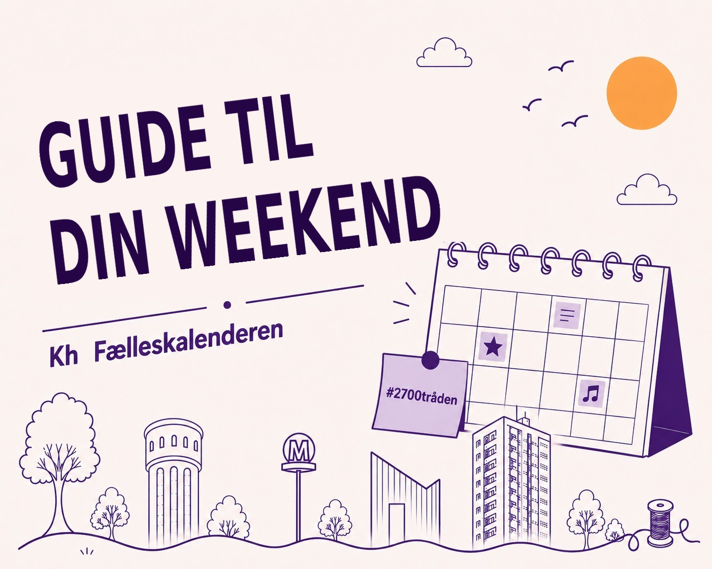

Hvad sker der i 2700 i denne weekend?
Hele weekenden
Frederik Smal: Common Silent Places
Brønshøj Vandtårn · Fredag 17.00–20.00, lørdag og søndag 12.00–17.00 · Gratis
Frederik Smal har hængt små, enkle stregtegninger op mellem vandtårnets betonsøjler. De handler om erindring, ømhed og tilhørsforhold – om steder, der kun findes inde i os. Der er ingen fast rute og næsten ingen tekst, så man går rundt i det runde rum og møder værkerne ét ad gangen, mens lyset og lyden i tårnet bliver en del af oplevelsen.
Læs mere
Fredag 23. oktober
Barselscafé i Rytterskolen: Babymassage
Rytterskolen · Kl. 10.00–12.00 · Gratis, kræver tilmelding
En særudgave af barselscaféen, hvor I lærer babymassage. Massagen kan berolige, styrke babyens kropsbevidsthed og hjælpe dig til at aflæse dit barns signaler. Værten er Anne-Mette, der er uddannet doula og yogalærer.
Læs mere
Højskolesang
Tingbjerg Kirke · Kl. 14.00 · Kaffe og kage 10 kr.
Fællessang fra Højskolesangbogen i Tingbjerg Kirke. Dagens gæst er tidligere sognepræst Lis Bisgaard, og der er kaffe og kage til en tier.
Læs mere
Visens Venner Brønshøj: Glemmer du, så husker jeg
BRØK, Brønshøj Kulturhus · Kl. 19.00–21.00 (spisning fra 18.00) · 80 kr., medlemmer 50 kr.
En aften med de viser, der har fulgt os gennem livet – nogle lærte vi som børn, andre kom til senere. Visens Venner synger et håndplukket udvalg med Yvonne Sundby som visevært, og alle er velkomne. Dørene åbner kl. 18 til spisning: medbring selv mad, drikke og service.
Læs mere
Lørdag 24. oktober
Hoppeloppen – selvbetjent legestue (1–5 år)
BRØK, Brønshøj Kulturhus (Bevægelsen) · Kl. 09.00–17.00 · Gratis, ingen tilmelding
En lille indendørs legestue med redskaber, som børnene kan bygge deres egen balancebane af. Den ligger i Bevægelsen, huset ved siden af hovedbygningen. Den er selvbetjent, så man rydder selv op efter sig, og den er kun for 1–5-årige – ikke de store søskende.
Læs mere
FIX damer – Kastrup
Pilesvinget/Brønshøj Kirkevej · Kl. 10.00
FIX damer tager imod Kastrup Boldklub på hjemmebane. Kom og hep på holdet på Pilesvinget.
Læs mere
Gæt et dyr (5–9 år)
BRØK, Brønshøj Kulturhus · Kl. 11.00–11.45 · 55 kr.
Naturvejleder og tv-eventyrer Emil Sanderhoff og spillemand Jonas Hellerstedt laver den klassiske leg om til en musikalsk dyrequiz, hvor publikum er med. Når dyret er gættet, bliver der spillet og danset til en sang om det. Scenen bliver til et lille zoologisk museum med både døde og levende dyr, som børnene kan se nærmere på bagefter.
Læs mere
Planterelief-workshop med Adam Fenton
BRØKs Keramikværksted, Brønshøjvej 17B · Kl. 11.00–17.00 · 575 kr.
Tag en plante eller et plantemotiv med, der betyder noget for dig. Du ridser og graver motivet ud i en ramme med ler, og det bliver støbt i gips som et relief, du tager med hjem. Undervejs fortæller kunstneren Adam Fenton om sin serie af gipsrelieffer med planter fra venners hjem.
Læs mere
Studiekreds: The Good Place
Tingbjerg Kirke · Kl. 11.00–15.00 · Tilmelding til Thomas Ammitzbøll-Bach på 29 43 36 97
Netflix-serien The Good Place handler om livet efter døden, om at være et godt menneske og om filosoffernes tanker om etik – og den er meget sjov. I ser første sæson over to lørdage (24/10 og 21/11) og snakker om den over et let måltid og kaffe.
Læs mere
FIX herrer – PI Fodbold
Pilesvinget/Brønshøj Kirkevej · Kl. 12.00
FIX herrer slog Olympiakos København 3-2 sidste lørdag og skal nu prøve at følge op hjemme mod PI Fodbold i Serie 2.
Læs mere
IF Stadion – Team Sydhavsøerne 2
EnergiCenter Voldparken Hallen, Åkandevej 31 · Kl. 14.30
Håndbold i Husum: IF Stadions herrer tager imod Team Sydhavsøerne 2 i 2. division.
Læs mere
Koncert med universitetskoret Lille MUKO
Brønshøj Kirke · Kl. 15.00 · Gratis
Lille MUKO synger Frank Martins messe for dobbeltkor – et værk, der lå i komponistens skuffe i årtier, før det blev opført første gang i 1963. Koncerten åbner med John Taveners kirkemusik og slutter med tre efterårssange af Matti Borg.
Læs mere
Mette Holm + Makiko Hirabayashi's Murakami Trio
BRØK, Brønshøj Kulturhus · Kl. 20.00–22.00 · 180 kr.
I Murakamis novelle 'Charlie Parker Plays Bossa Nova' spiller saxofonisten bossanova – noget, han aldrig nåede i virkeligheden. Makiko Hirabayashi (klaver), Jan Harbech (sax) og Morten Ankarfeldt (bas) spiller musikken, mens Murakamis danske oversætter Mette Holm læser op og fortæller.
Læs mere
Søndag 25. oktober
Husumvold Søndag: Gud og danskerne – er troen på vej tilbage?
Husumvold Kirke · Kl. 11.15–12.45 (gudstjeneste 10.00) · Gratis
Er en ny generation på vej mod kirken? Forsker Jacob Holst Mouritzen tager udgangspunkt i Bibelselskabets store trosanalyse fra 2026 og fortæller om danskernes tro og tvivl – og om, hvad der ligger bag snakken om en religiøs vækkelse blandt unge. For både troende, tvivlere og nysgerrige.
Læs mere
Gratis omvisning i Carlstad-udstillingen
Rytterskolen · Kl. 13.00–15.00 · Gratis, kræver tilmelding
I næsten to år havde den svenske hær sin hovedlejr, Carlstad, i Brønshøj og Utterslev. Udstillingen på Rytterskolens 1. sal fortæller historien med 300 små figurer i 18 scener – frem til stormen på København i februar 1659. Omviser er Tom Petersen, der har boet i Brønshøj i 40 år.
Læs mere
Music House Brønshøj: The 3eatles spiller The Beatles
BRØK, Brønshøj Kulturhus · Kl. 14.00–16.00 · 120 kr.
Coverbandet The 3eatles spiller Beatles fra de tidlige rock'n'roll-numre til de store ballader – fra Love Me Do til Let It Be. Der er lagt op til fællessang og en svingom.
Læs mere
Har vi overset noget, der sker i 2700? Smid det i kommentarerne — så hjælper I med at gøre Fælleskalenderen bedre.